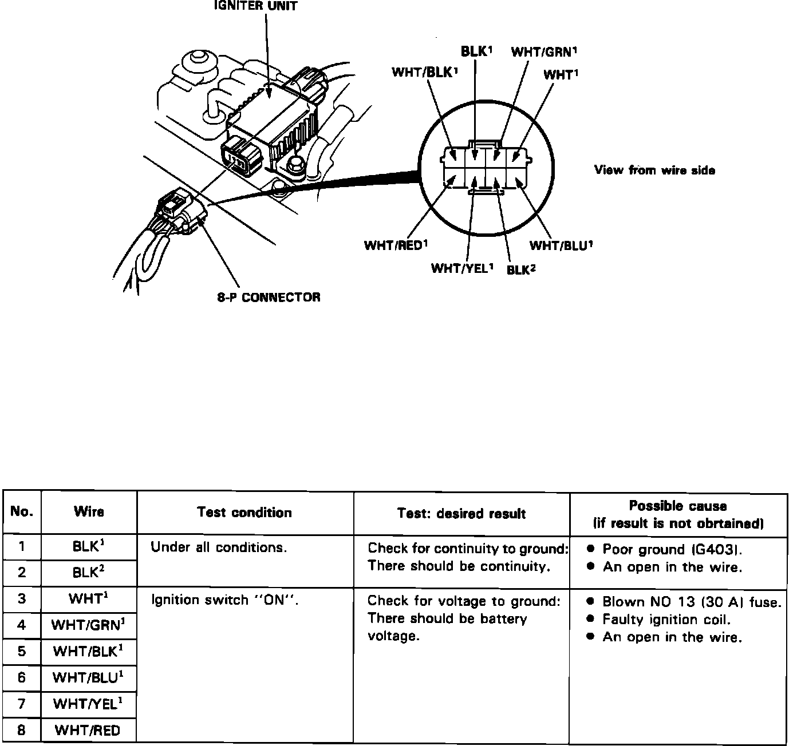

Ignition Control Module: Testing and Inspection
NOTE: ^ See COMPUTERIZED ENGINE CONTROLS when self-diagnostic indicator blinks.^ The tachometer should operated normally. If the tachometer is not working correctly, this could be an indicator for a bad ignitor unit.
Disconnect the 8-P connector from the igniter unit. Make the following input tests at the harness pins. If all tests prove OK, yet the system still fails to work, replace the igniter unit.
Igniter Unit Input Test:

Testing Procedure